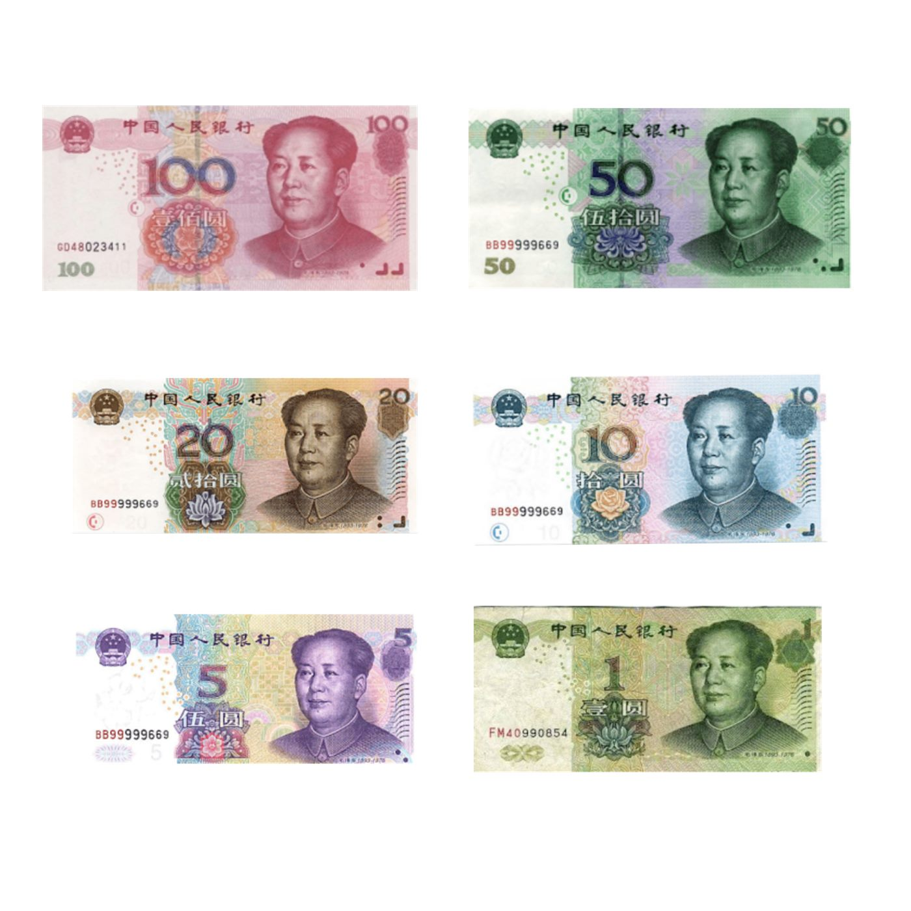

橋중국
중국중국, EU에 '자유무역·대화' 강조… 통상 협력 의지
중국 외교부, EU와의 경제·통상 관계는 상호이익이라며 보호무역 자제 촉구.
중국 외교부, EU와의 경제·통상 관계는 상호이익이라며 보호무역 자제 촉구.
왕이 외교부장, 글로벌 거버넌스 개혁 방향 제시. 중국, 7월 세계 AI 회의 개최 예정.

상무부 집계, 서비스 교역 확대 지속. 디지털·관광·운송이 견인.

수출 증가폭이 둔화되며 흑자가 축소됐다. 대외 수요 약화 신호로 읽힌다.
시진핑 중국 국가주석과 카벨라슈빌리 조지아 대통령이 수교 34주년을 맞아 축전을 교환하고, 양국 관계를 전면적 전략 동반자 관계로 격상한다고 공동 선언했다.

중국 국가통계국이 발표한 5월 물가 지표에서 소비자물가(CPI)는 전년 동월 대비 1.2%, 공업생산자출고가격(PPI)은 3.9% 상승했다. 내수와 생산 부문 모두 가격 회복 흐름이 확인됐다.

대규모 설비 갱신과 소비재 이구환신(以舊換新)을 묶은 중국의 '두 가지 신' 정책이 효과를 이어가고 있다. 설비 갱신이 각 산업의 업그레이드를 끌어올리는 동력으로 평가됐다.

중국이 '십오오(十五五)' 규획 목표의 이행을 위해 6개 분야 109개 중대 공정을 제시했다. 신질(新質) 생산력 육성과 인프라, 민생 개선이 축이다.
중국의 달 탐사선 창어(嫦娥) 7호가 원창 발사장에 도착해 하반기 발사를 준비하고 있다. 달 남극의 환경과 자원 탐사가 임무다.
중국 유인우주공정이 올해 유인 비행 2회와 화물우주선 보급 1회를 실시한다. 홍콩·마카오 출신 우주인의 첫 우주정거장 비행도 이르면 올해 이뤄질 전망이다.

왕이 중국 외교부장이 미얀마 외교장관과 회담을 갖고 양국 협력과 지역 정세를 논의했다. 유엔이 정한 '문명 대화 국제일' 글로벌 행사에는 영상 축사를 보냈다.

중국 외교부가 필리핀의 테오도로 국방장관과 그 친족에 대한 제재를 발표했다. 남중국해를 둘러싼 양국 갈등이 이어지는 가운데 나온 조치다.
중국 국가발전개혁위원회가 6월 들어 에너지 분야 제도 정비를 잇달아 내놓고 있다. 비화석에너지 전력소비 산정지침을 시행하고, 송전권의 시장화 거래 시범도 시작한다.
중국 상무부와 문화여유부, 국가철로그룹 등 8개 기관이 철도와 관광의 융합 발전을 촉진하는 조치를 공동으로 내놨다. 5개 방면 15개 정책으로 서비스 소비 확대가 목표다.

시진핑 중국 국가주석의 북한 방문이 마무리됐다. 環球網은 이번 방문을 '역사적 방문'으로 규정하고, 평양 우의탑이 양국 우의의 계승을 증언한다고 전했다. 국제사회의 평가와 후속 협력 행보에 시선이 쏠린다.
세계 최장 해상교량인 港珠澳대교의 홍콩 커우안(출입경 검사장)이 이달 25일부터 '무감 통관'을 시작한다고 環球網이 전했다. 멈춰 서지 않는 통관으로 웨강아오 대만구(粤港澳大灣區)의 1시간 생활권이 한층 빨라진다.
중국 주재 일본기업의 85%가 중국 시장에 남기로 했다는 조사 결과를 중국일본상회가 내놨다고 環球網이 보도했다. 공급망 재편 논의 속에서도 세계 2위 시장의 흡인력이 여전하다는 방증이다.